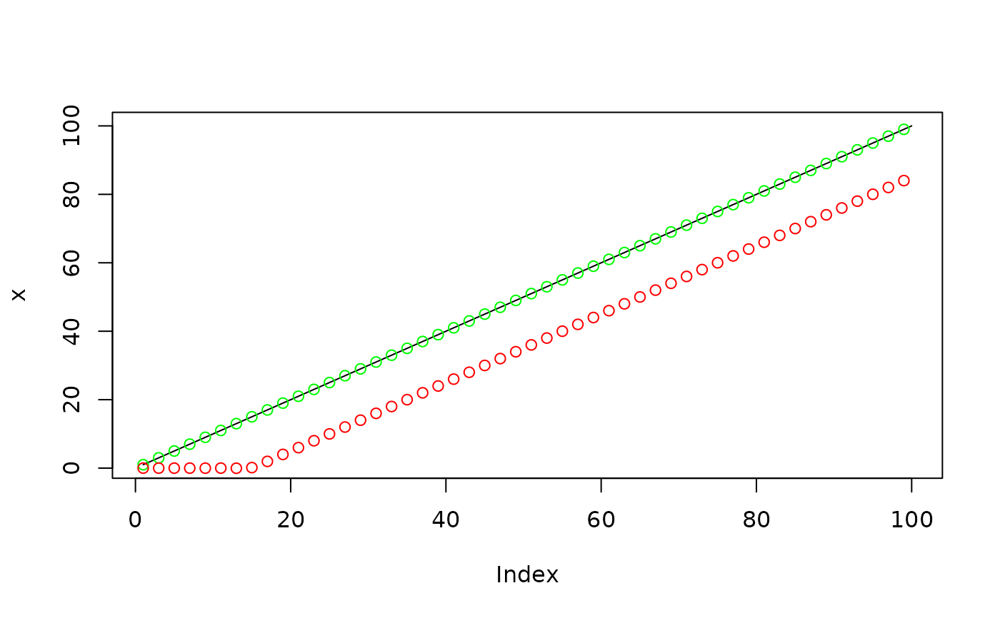

Decimate with 'FIR' or 'IIR' filter
decimate(x, q, n = if (ftype == "iir") 8 else 30, ftype = "fir")signal to be decimated
integer factor to down-sample by
filter order used in the down-sampling; default is 30
if ftype='fir', or 8 if ftype='iir'
filter type, choices are 'fir' (default) and
'iir'
Decimated signal
This function is migrated from signal package,
but with bugs fixed on 'FIR' filters. The result agrees with 'Matlab'
decimate function with 'FIR' filters. Under 'IIR'
filters, the function is identical with signal::decimate,
and is slightly different with 'Matlab' version.
x <- 1:100
y <- decimate(x, 2, ftype = "fir")
y
#> [1] 1 3 5 7 9 11 13 15 17 19 21 23 25 27 29 31 33 35 37 39 41 43 45 47 49
#> [26] 51 53 55 57 59 61 63 65 67 69 71 73 75 77 79 81 83 85 87 89 91 93 95 97 99
# compare with signal package
z <- signal::decimate(x, 2, ftype = "fir")
# Compare decimated results
plot(x, type = 'l')
points(seq(1,100, 2), y, col = "green")
points(seq(1,100, 2), z, col = "red")
